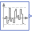

UniformNoiseDemonstrates the most simple usage of the UniformNoise block |
|
Diagram
Information
This information is part of the Modelica Standard Library maintained by the Modelica Association.
This example demonstrates the most simple usage of the Noise.UniformNoise block:
- globalSeed is the Noise.GlobalSeed block with default options (just dragged from sublibrary Noise).
- uniformNoise1 is an instance of Noise.UniformNoise with samplePeriod = 0.02 s and a Uniform distribution with limits y_min=-1, y_max=3.
- uniformNoise2 is identical to uniformNoise1 with the exception that useAutomaticLocalSeed=false and fixedLocalSeed=10.
At every 0.02 seconds a time event occurs and a uniform random number in the band between -1 ... 3 is drawn. This random number is held constant until the next sample instant. The result of a simulation is shown in the next diagram:

{kind=link}
Outputs (1)
| uniformNoise2_y |
Default Value: uniformNoise2.y Type: Real |
|---|
Components (3)
| globalSeed |
Type: GlobalSeed |
|
|---|---|---|
|  | uniformNoise1 |
Type: UniformNoise |
| uniformNoise2 |
Type: UniformNoise |